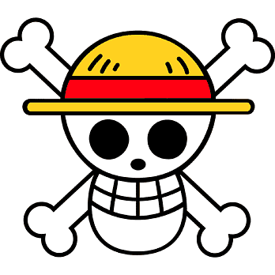

Bem-Vindos Marujos
Gol D. Roger - HAHAHAHAHAHAHAHAHAHAHAHAHA Minha riquezas e tesouros?? Se vocês o quiserem, eu os deixo pegar. Procurem por ele, deixei tudo na quele lugar!!
Get MoreGol D. Roger - HAHAHAHAHAHAHAHAHAHAHAHAHA Minha riquezas e tesouros?? Se vocês o quiserem, eu os deixo pegar. Procurem por ele, deixei tudo na quele lugar!!
Get MoreRoronoa Zoro, é um personagem fictício da série One Piece criada por Eiichiro Oda. Na história, Zoro era um caçador de piratas que por fim se torna um quando é convencido pelo protagonista Monkey D. Luffy a ser o primeiro membro de sua tripulação, os Piratas do Chapéu de Palha.
Monkey D. Luffy, é um personagem fictício e o protagonista da franquia One Piece criada por Eiichiro Oda. Ele é apresentado como um jovem cujo corpo ganha as propriedades de borracha após ter comido a Gomu-Gomu no Mi, uma das várias frutas amaldiçoadas conhecidas como Akuma no Mi ou Frutas do Diabo.
Luffy, um jovem cujo corpo ganhou as propriedades de borracha após ter comido uma fruta do diabo acidentalmente. Com sua tripulação, os Piratas do Chapéu de Palha, Luffy explora a Grand Line em busca do tesouro mais procurado do mundo, o "One Piece", a fim de se tornar o próximo Rei dos Piratas.
